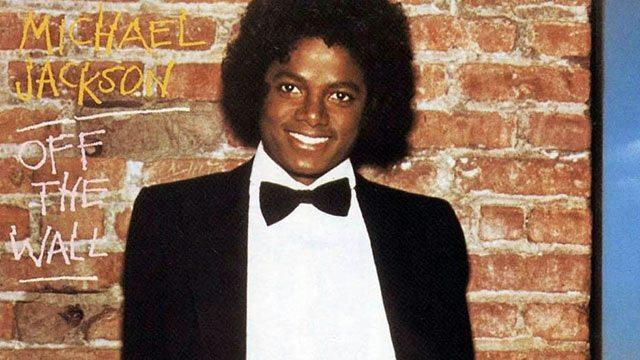
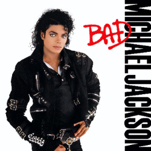
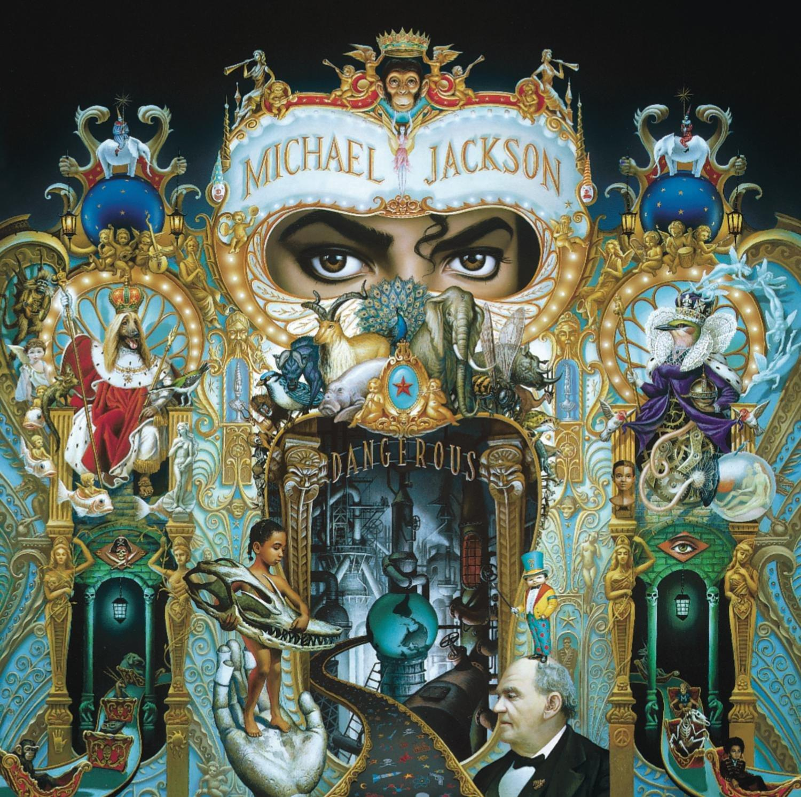
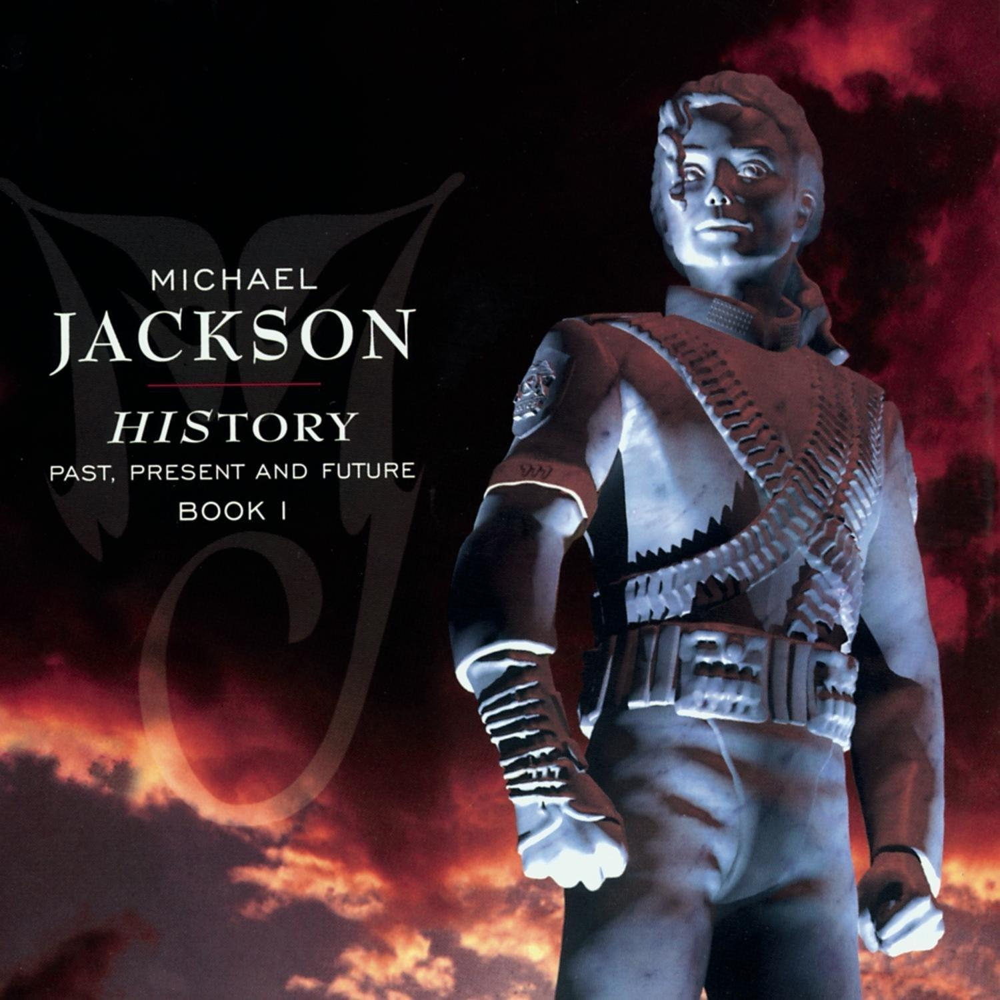

Lançado em 1979, marcou o início da fase adulta e solo de Michael Jackson. O álbum trouxe uma mistura envolvente de pop, disco e funk, consolidando Michael como um artista independente e versátil. Sucessos como “Don’t Stop 'Til You Get Enough” mostraram sua nova identidade musical.

Lançado em 1982, é considerado o álbum mais vendido da história da música. Com hits como Billie Jean e Beat It, revolucionou a indústria musical e transformou Michael Jackson em um fenômeno mundial.

Lançado em 1987, mostrou um Michael mais confiante, moderno e ousado. O álbum trouxe uma imagem forte e madura, além de sucessos como Smooth Criminal e Man in the Mirror.

Lançado em 1991, apresentou um estilo mais contemporâneo, com influências de new jack swing, R&B e pop. O álbum destacou a capacidade de Michael de se reinventar, com músicas marcantes como Black or White e “Remember the Time”.

Lançado em 1995, combinou grandes sucessos com músicas inéditas e pessoais. O álbum refletiu momentos intensos da vida do artista, trazendo mensagens sociais e emocionais em faixas como “They Don’t Care About Us” e “Earth Song”.